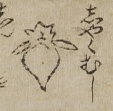

病気；ビョウキ，虫；ムシ，癪；シャク

癪の虫。水滴を逆さにしたような胴体に、金平糖のような頭部をもつ。
出典：親書誌：U426_nichibunken_0017：セメンエン；セメンエン／日付：2006／資源識別子：U426_nichibunken_0017_0002_0000
Copyright (c)2010- International Research Center for Japanese Studies, Kyoto, Japan. All rights reserved.